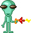
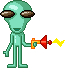

snotball metrics
snot description 
snotballs are entities that willinging accept the snot into their body, soul, and mind and assimulate successfully into the snot hivemind. just like snot, excremented created by sneer, snotballs are an extention of sneer - masses of flesh that are offshoots of her dna.

 
 


snotballs can be identified by their alien-like appearance, slimey texture, varying shades of green, and a silly personality - they have a troublemaking nature by fault of their creator.
snot stats
the stats per each snotball will vary. snotballs inherit all of their previous stats from before they became a snotball.
snotballs can vary in strength - some snotballs are weak and require protection. some snotballs are strong and protect the shelter.
snotball abilities
snot call - the snotball has the option to communicate with sneer telepathically at any time. success is based off of proximity to sneer, the snotball's own strength, and sneer's will (if sneer is busy or unwilling, she will not answer).
snotball traits
snot stock - the snotball is naturally more tanky and resilient. 5% increase to physical defense, magical defense, and nature resistance.
slime coating - snotballs are coated in a slimey exterior coating that helps them evade trouble. 8% increase to evasion and +2 speed.
// return back to the living room //